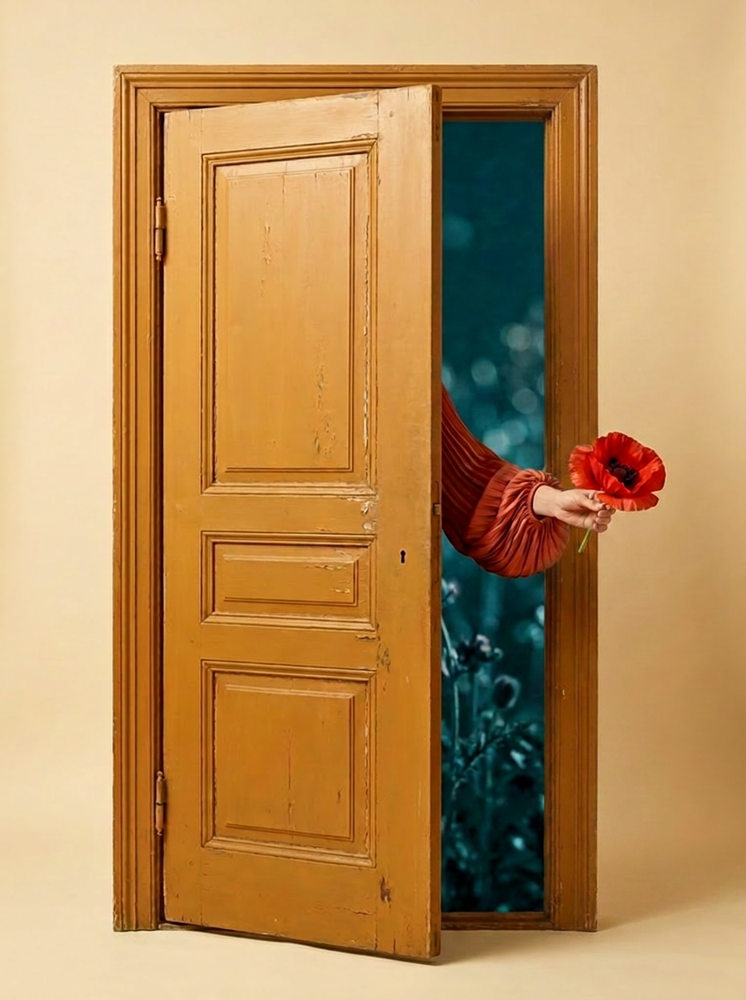

Я — Социальное
рисование цветом
Экспрессивное проявление себя вовне. Импровизация пальцами, без кистей — у вас их десять.
Искусство проявляет. Коучинг раскрывает. Вы открываете автора своей жизни.
Арт-коучинг для лидеров и команд
Записаться на сессиюКарьера навыков закончилась. То, чему годами учились, машина делает быстрее и дешевле — впервые обесценивается не незнание, а знание.
Не обесценивается то, что нельзя скачать: глубокая экспертиза, вкус, воображение, авторство, идентичность. Это новая опора.
Альберт Эйнштейн
Прогнозируемое будущее экстраполирует ИИ. Предпочтительное — то, которое должно произойти с вами и вашим делом, — можно только вообразить и создать.
Вы работаете руками: краска, коллаж, найденные объекты, автопортрет. Слова натренированы звучать правильно — а краска и композиция отвечать «правильно» не умеют: они показывают как есть. То, к чему идут месяцами бесед, проявляется за одну сессию.
Увиденное в работе коуч помогает назвать, раскрыть и перевести в решения — паттерны, барьеры, стратегия, план действий. Инсайт, который вы увидели сами, остаётся с вами и превращается в действие.
Искусство проявляет, коучинг раскрывает — автора своей жизни открываете вы.
Программа существует только на стыке — поэтому нас двое.
Пять сессий — не набор техник, а система: каждая художественная практика открывает свою грань идентичности. Уметь рисовать не нужно.
рисование цветом
Экспрессивное проявление себя вовне. Импровизация пальцами, без кистей — у вас их десять.
абстракция
Увидеть невидимое, проявить непроявленное. Деконструкция как метод в искусстве и жизни.
коллаж
Сборка разрозненных представлений о себе в единый образ. Коллаж как практика создания будущего.
реди-мейд
«Это искусство, потому что я так решил». Принятие решений и устойчивость.
автопортрет
Интеграция: создаём рамку и встречаемся с собой настоящим.
Каждая сессия завершается галереей работ, программа — визуальной стратегией вашей жизни. И, в отличие от планов после тренингов, которые остаются в файлах, эта стратегия висит на стене — картина, созданная вашими руками, каждый день напоминает о выбранном направлении.
Очно · Москва · мастерская «Да-да!» · суббота 11:00–14:00

Его можно только придумать и создать. Именно это художник делает с каждой работой: не копирует то, что есть, а создаёт то, чего ещё не было. Стать художником — значит стать автором своей жизни.
Вершины, которые «не берутся» — в карьере и в жизни, — сначала берутся в воображении.
15 000 ₽ / сессия · 50 000 ₽ / курс
Приходите на любое занятие по субботам и проходите 5 сессий в удобном порядке. Группа до 12 человек. Оставьте запрос — или запишитесь на удобную дату по календарю.
по запросу
Экспресс-практика «Цвет вместо слов», демо-сессия «Портрет лидера», командные сессии, полный трек идентичности — на вашей площадке или в мастерской.
бесплатно
Встреча-знакомство перед корпоративным запуском: проясняем задачи и ожидания, собираем формат под вас.
Точно. Художественные навыки не нужны: техники построены так, что работа получится у каждого — и эстетически, и по результату. Мы не используем кисти там, где есть десять пальцев.
Арт-терапевт — психолог, использующий простые художественные техники. У нас искусство ведёт действующий художник, а планка — работа, достойная выставки. И принцип другой: терапия смотрит назад и чинит, а коучинг смотрит вперёд — не латает прошлое, а даёт импульс в будущее: анализ, рефлексию и конкретный план действий. Мы соединяем это с искусством: смотрим вперёд и создаём.
В основе — строгая методология: цикл Колба в каждой сессии, проективные методики, психология восприятия, искусствоведение от фаюмских портретов до современного искусства. Это исследование, не эзотерика.
Я пришла с ощущением, что застряла и не понимаю, чего хочу дальше. За одну сессию на листе вдруг стало видно то, что я месяцами не могла сформулировать словами. Ушла не с чужим советом, а с собственным решением — и оно до сих пор работает.
Шёл скептически: рисование не моё, и слово «арт» звучало несерьёзно. Оказалось, дело вообще не в рисунке. За полтора часа я увидел свою рабочую ситуацию под углом, до которого сам бы не дошёл. Честно и по делу, без эзотерики.
Напишите нам — ответим, подскажем ближайшую сессию или назначим встречу.
Telegram @ianitavoit
МАКС: +7 926 201-93-65
ianita.voit@gmail.com
Наш телеграм-канал о воображении и визуальных нарративах — t.me/ESVIum